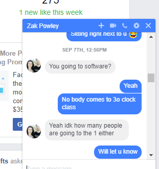

Prabhjot singh
Work Experience
Project timeline:
Here you will find the work I have completed each week.
Week 1:
We were given the introduction about the course by our lecturers Adon and Elise
We were assigned our 1st project was a small one spanning 4 weeks. I was in a team with two other students
My team got together and started working on the app as the first version of it was due on the next Tuesday
Week 2:
We were given an introduction an tutorials on how to install and use gitlab and trello
We displayed our first version of the project
The only requirement was to make sure the spinner on the app was working
We were given the requirements to add on the app which was to be completed by next week
We added spin and re-spin buttons to the app
Week 3:
We submitted our spinner project
We studied and did some revision for the exam in the upcoming week
We were required to submit our CV in the next week in order to receive our 2nd project
Week 4:
We had a mid-term exam
I submitted my CV for my next project I wished to do which was one of either coffee passport or buddy support
Week 5:
I was assigned my project which was buddy support
I was also assigned to a new team with 4 other students
We had a group meeting and sent out an email to the project company to schedule a meeting in order to collect details about the project
Week 6:
We did not receive any reply from the company
Sent a chaser email to the company in an attempt to establish communication
Week 7:
We did not receive any reply from the company in this week either
Approached our lecturer to make him aware of our situation and requesting for further course of action
Week 8:
Adan assigned us an unfinished project from last semester which was “meals on wheels”.
We were given instructions on the workings that was pending on the project and other details that could be added from our part
Week 9:
Approached Adon as none of my team members showed up for the first class and I was given the task to add the login/out feature
Learnt how to install and work on Mamp
In the second class, 3 out of 5 of us got together and assigned ourselves the tasks that each member had to work on.
I was assigned the task to add the sign-up option on the page and remove a whole page dedicated to only sign up
Another task I was assigned was to change the setting to give authentication access only to an admin of the page to prevent public access of data
Week 10:
We had a presentation in class informing about our progress so far and what has to be done further
Week 11:
I started working on login-out feature for the app, which I finished by the second class
Week 12:
I picked up my second task which was to integrate sign up with all the pages in the app
Week 13:
I finished working on my sign up and page integration
Had some issues uploading the app on GetHub but, completed it by the end of the week
Week 14:
I started working on the ‘delete customer’ feature on the app
Week 15:
I finished working on the ‘delete customer’ feature and pushed it to GetHub
Got a bug on the ‘view customer’ feature fixed by the respective team member and pushed it to GetHub
Started working on the ‘edit customer’ feature which was difficult for me and could not complete it
Week 16:
Started working on the ‘edit customer’ feature which was difficult for me and could not complete it
We had the final presentation about our project and the work that we had done on it
Worked on the portfolio for the final submission of the subject
I knew from the start that this project was never going to be a walk in the park for me and that there would be a lot of challenges I would have to overcome. The fact that I had failed in this very subject in my previous semester was the biggest weight I had to bear and made my question myself at the start. But I had some positives to take away from this failure that would help me come back stronger this time around. Last semester, my biggest mistake was taking up this project individually rather than working with a team. This time I had a team with me on the project and through their support, the burden of my dejections from last semester only got lighter along the way and gave me a huge boost in confidence for performing better in my second try.
We faced a setback early into our project when the representative of the company who was communicating with us for our buddy support project never got back to us. We had spent quite some time preparing for the meeting with her as we noted down all the information that we required and questions we had to ask the representative that would help us better understand what was to be asked of us and how to go about the project. But despite trying hard for about two weeks to get in touch with the representative, we never got a response. The delay caused to us by this and looking at our peers already start working on their projects had dented our hopes and created a sense of chaos amongst us. At this time, we decided to seek the help from our lecturer Adon, and requested him to advise us on how to proceed from this dead end. After his attempt to establish a communication also failed, he gave us a new project – Meals on Wheels, which was a huge relief for us because this was a project had been worked on the last semester and we had to work on improving it and fixing the bugs of this project.
As we began to work on our new task, we quickly realised that this project was not going to be as easy as we were hoping for it to be, especially for me and another teammate. This was because only the two of us in our group were aware of the project and the language/coding that was used in it and the other members had no experience working with this particular coding. There was a suggestion to redo the whole project in a simpler language we all knew but, this was not going to be feasible as it would have been really time consuming and in the last semester, there were four teams who were working together on this project. As me and my other teammate Zak were aware of problems we would face to redo the entire project, we strongly opposed this suggestion. We then decided to continue to work the existing project and we had help from Adon who advised us on the bugs and other aspects of the project that we had to work on.
After we knew what had to be done, we started dividing and assigning the work amongst us. This process brought along with it, its own hurdles. We lost a teammate soon after starting the project due to an injury. Another problem that we faced was on the work front. One of the team member insisted on working on CSS against our advice as this part was relatively easy and could be worked on in the later stages. After failing to convince him, the remaining members, which included me, Zak and Gray took it upon ourselves to work on the major parts of the project and left the other member with CSS. We were using Trello to keep track of our work and upload all relevant information so that we were up to date about the progress of the project at all times and there was no gap in communication/information. A big boost for us came when we found that all the relevant information and working from the previous semester was also available in Trello for us to access which was a big help for us.
Another help for us came from our lecturer, Adon, who was always prompt and supportive when it came to clearing our doubts and guide us whenever we required direction. His support was a major factor in improving our abilities while working on the project and helped us be more efficient with our work which would not have been possible without his support and guidance.
The challenge for me came in the form of node.js. This was a language that I had not worked on before. I downloaded Mamp, which was a software that helped to run node.js server. This was on my Otago Polytech profile which came with a major problem. Every night the system clean ups would delete Mamp as I downloaded it myself externally and due to this, I had to download the software repeatedly in every class. As a solution, I downloaded this software on my personal laptop which gave me a continuous and uninterrupted access and I could now work more freely on my share of the work. As I mentioned earlier about my inexperience with node.js, I had to rely heavily on google and stackoverflow to understand and process my share of the work. This helped a me a lot in improving my abilities in approach when in unchartered waters and gave me the grit to work hard and complete my share of the work no matter the challenges that was to come in front of me.
One of my initial tasks was to add a general login/off panel to the page. Although I was thorough with my html coding, I had no idea on how to incorporate the node.js codes into html. Adon helped me out with this and gave me a very simple solution to a problem which no longer seemed challenging. My next task was to add security for each of the tab on the webpage apart from the ‘About’ tab so that these tabs could not be accessed without authentication. After this, one of the bug that I had fix was to take away the ability of general public to simply sign up and access the data. This had to be done as the data was private and to be accessed only by the internal staff members. Hence, I changed the authentication setup so that only an admin could log on to the page to access the data. This took up a lot of time as the whole coding was already done and I had to do a lot of research on google and other relevant materials to make this change without compromising the structural coding of the page. My final task was to add the feature to delete registered customers in case of inactivity or any other reason specific to the business. This feature was added in order to give the users the ability to streamline the data if required by removing inactive or maybe incorrect customer data. I also wanted to add the feature to edit the details of existing customers and did try to work on it but, it was very difficult and time-consuming and had to let it go.
Reflection
Looking back at my experience of doing this project, I would conclude that my second attempt was much better than my first try. Despite some disagreeable members, I was happy with the group and the support and teamwork that was put into this project. This gave me a lot of experience on how to work effectively in a team and how to handle various situation and decision making especially when there is a disagreement within the team. The opportunity to learn new tools such as node.js was also a beneficial experience and which I can now add to my skillset. It was a necessary learning curve and I am satisfied with the amount of effort I put into it and excited to have learnt so much more than I expected at the end of it.
Professional Proficiency
Q1: How often do you attend scheduled group meetings/scrums?
A:I made it a point to attend all the scheduled team meetings
for this project in order to be up to date on the progress and be supportive on the on-time completion of the project
Rating:
Q2: How well did you communicate with others in your group or subgroup?
A:I used multiple channels on communication depending on the situation to ensure that the information
reached my group members on time and without delay
Rating:
Q3: How well did you document your work throughout the project?
A: I have documented my progress throughout the project by maintaining
a timeline and also by regularly uploading the completed work on GetHub.
Github
Rating:
Q4: How well did you respond to problems or changing requirements?
A:I believe that I responded to the problems well by understanding the situation and keeping
the preferences of each of the team member in mind. This was supplemented by my decision making abilities
to exert priority of work and motivate my team members to align the priorities with the project.
Rating:
Professional proficiency can be defined as one skill that helps an individual to improve their responsibility and liability towards their work. From the concept of professional proficiency, it can be suggested that by this approach it is possible to develop the personal skills of an individual. Apart from high level, professional proficiency helps to build communication skills and also with the help of this skill one who have up to date knowledge so and proper education. Apart from that it can also be suggested that professional proficiency can be achieved through some formal education and with the help of professional certification.
In regard to the aspect of professional proficiency, I managed to maintain regular mode of communication with my peers. In this particular aspect I effectively managed to inform my fellow students on the status of my progress in the development of the project and also made proper communication with regard to giving them proper information on my coming to classes or not. Thus for this part, I believe to have played my role in most efficient manner as this is the base of achieving professional proficiency. There are some factors also involved in this particular task and this is the management of time and in that regard also I managed a good effort in saving time.
From the given scenario it is possible to understand in which way communication is related with personal proficiency. According to Pearlman et al. (2017), communication generally increases the level of personal proficiency. As I am creating a database and I am doing this work with a group, it can be considered as a team assignment. Due to some urgency if I am unable to be present for the class or team meeting, then I inform to all of my teammates via facebook or slack. 
With the help of this I can easily communicate with my friends and can inform them all the details. Therefore, I inform all of my friends so that my absence does not create as such any kind of problem. Apart from that, this kind of attitude provides professional proficiency that is present in my character. From this character it is possible to understand that I am very serious over my commitments that helps me display a professional attitude. My proficiency expresses that I can communicate with others in an appropriate manner. Besides that, it is also possible for me to attend any kind of group discussion because I communicate with my friends via any kind of social communicating tool.
From the given scenario it is possible to understand only proper communication channels can improve professional proficiency according to the requirements. To make proper connection with all the volunteers also needs professional proficiency. For any kind of group work generally I use slack
because it is one of the most accessible social network platform and with the help of this tool, I can easily manage everything and contact with friends. For any necessicity if I become unavailable I send them that message via slack or Facebook. The level of proficiency also developed my responsibility and built or incorporate professional characteristic in my nature. As a result, professional proficiency not only developed my communication skill and responsibility, it also developed my decision making ability. From the given scenario, it can be suggested that it is very important to maintain proper communication with the colleagues or with the people, with whom we work. It comes only if someone is professionally proficient. From the given scenario it can be suggested that with the help of a correct attitude, it is possible for me to sort out any kind of problems. The level of proficiency also developed my responsibility and built or incorporate professional characteristic in my nature.
My proficiency is also achieved from proper education and also from real time experience. Sometimes, I chose to send information through
an email because it is a secure medium for sending delicate communication. Therefore, I prefer email when I have to specifically deal with
my client and I communicate all the information to my client through email.

As per the concept of professional proficiency, it builds self-assessment (González-Sanmamed, Muñoz-Carril & Sangrà, 2014). Self review quality in an individual's nature. Apart from that it can be suggested that professional proficiency develop confidence and positivity in mind. It can make sure that it becomes possible for me to attend any kind of group discussion and make an active participation in all of them. In order to avoid any kind of difficulties during communication period I use trello, github because as it is an efficient source for communcitation and also keep track of the progress of the ongoing project.
This becomes possible only when someone takes an initiative to work on their communication skills. My professional proficiency also increased my receiving and analysing capability. Professional proficiency develops accuracy and also makes some effective characteristic changes that sort out any kind of problem. I believe to have played my role in most efficient manner as this is the base of achieving professional proficiency. There are some factors also involved in this particular task and this is the management of time and in that regard also I managed a good effort in saving time.
In order to conclude the entire review, it can be said that as a group member it is my duty to maintain proper communication with all other group members because from the concept of professional proficiency it can be suggested that communication skill is most important to increase the level of proficiency.
Technical Proficiency
Q1:What is the overall quality of your code like?
A:Self- review- Being a student and being in coding new, I am still in learning process. As I have been taught coding is both technical as well innovative form of technical knowledge, the level of good coding rises with deep learning and keep on working on new features. In this term I review my self as being an intermediate in terms of both technical knowledge as well coding expertise in terms of experience I have in coding. If I have to give my self points in ten , honestly I will give my self six , these six will be more towards my enthusiasm for learning in comparison to technical expertise.
Rating:
Q2: How well did you follow best practices in development?
A:Firstly I try to follow the syntax of the programming language sincerely.
For any defined function in the program, I personally first design the algorithm
for the formation of logic for the function and according to the syntax of the programming language
I convert that algorithm in the programming code . I always get updated with latest trends of
programming by following the blogs of various eminent software engineers, I practically practice the
tips given by them and most importantly our teachers at our Institution. I along with my fellow friends
follow error and trial policy in development to have deep learning of the coding.
Algorithm
Begin
Step1 : Assign scope to addNewMR
Step2: Define the console at log
Step3: if newMR entry is not empty
Then
Assign newMR = category of new entry
Then check meal requirements
Assign the requirement to the newMR category
Now close NewMR and proceed to next MR
Perform same procedure
End
Rating:
Q3:How well did you use appropriate version control?
A:
Version control in programming is one of the most important practice for programmers, the version control help the programmers to work in any programming language according to their own convenient way, these tools helps the programmers to manage the changes in source code over time. Version control tool keeps track on every modification performed on the software coding. In case the programmers commit any mistake in coding with the help of version control tool the program can compare the logic to the previous version and can do accordingly. Version control tool help to preserve the logic or the programming information in a standard way.
Here in order to perform our Version Control we had used –GitHub , an appropriate tool for reviewing the code, managing projects and building the Software together in group.
Github
Rating:
Q4:To what extent do you think you contributed an equal portion of the overall project?
more evidence needed
A:As a team member I worked with all the team members in designing the basic logic of the overall program, as we have a small team we all worked in unified way for overall project. Some how our team members worked by allocating the work to each other but in final approval we all sit together to accept the work task of the overall project.
Rating: